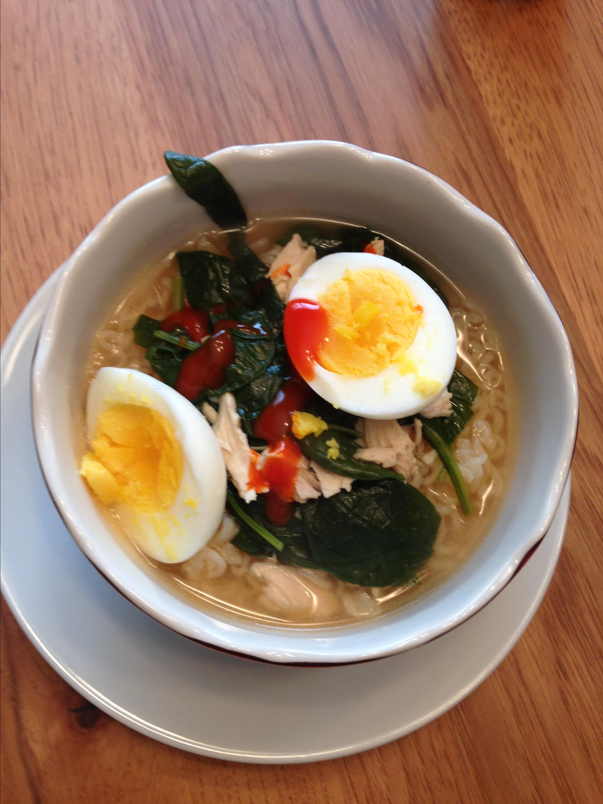

Ramen Recipe

Easy ramen with eggs recipe
Ingredients
- eggs
- chicken stock
- chicken meat
- spinach
- soy sauce
- sriracha sauce
- rice vinegar
- garlic
- ginger
- ramen noodles
Toppings
- dried seaweed
- green onions
- chile peppers
- sriracha sauce
Steps
- In small pot boil water and boil eggs for 8min, cool and peel
-
Combine chicken stock, chicken meat spinach, sauces, rice vinegar,
garlic and ginger in pot. Simmer for 10min
- Cook ramen noodles for 3min
-
Cover noodles with soup, add 1 soft boiled egg and garnish with seaweed,
green onion chile peppers and sriracha sauce
Recipe from.
All recipes